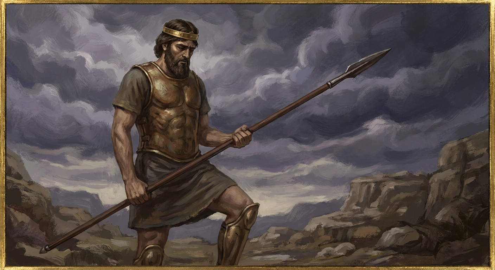
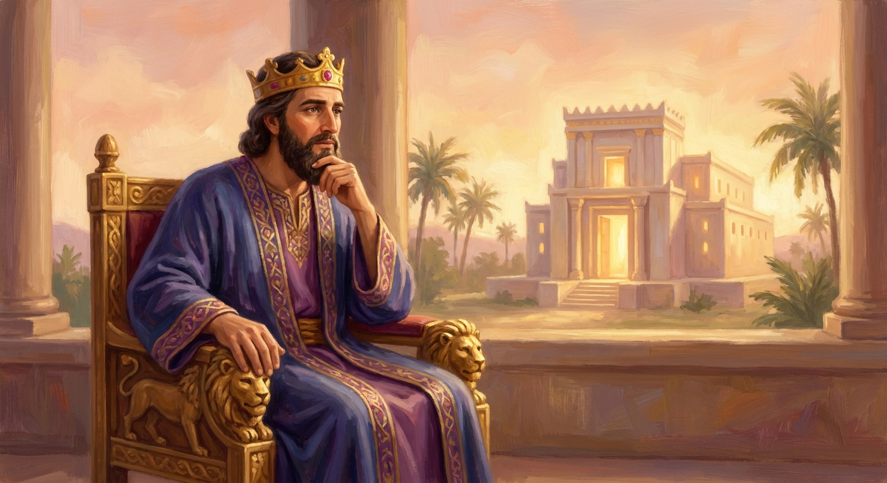
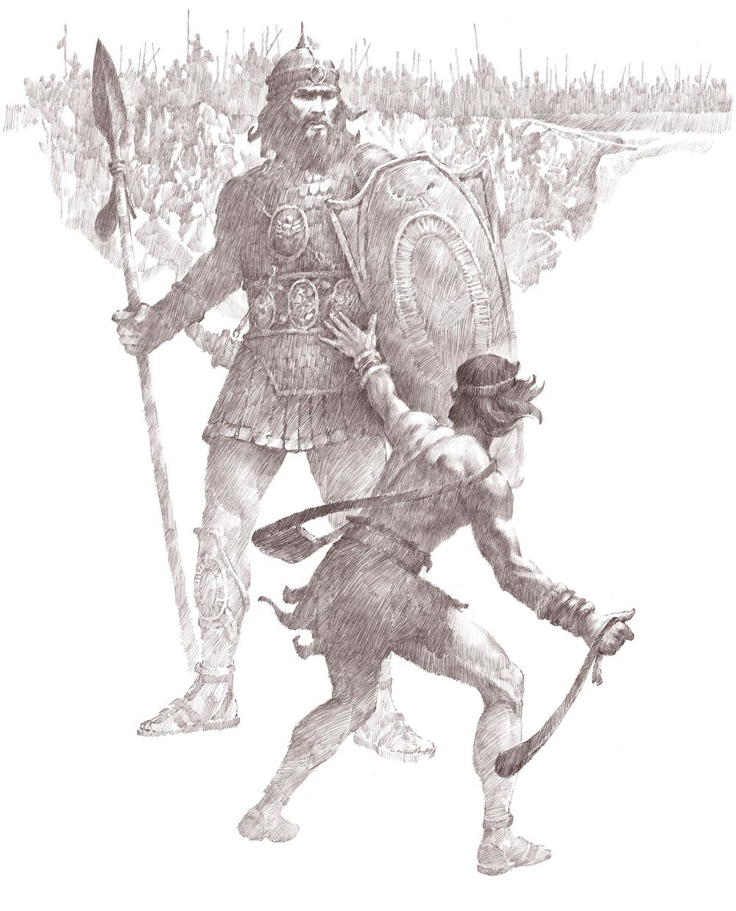
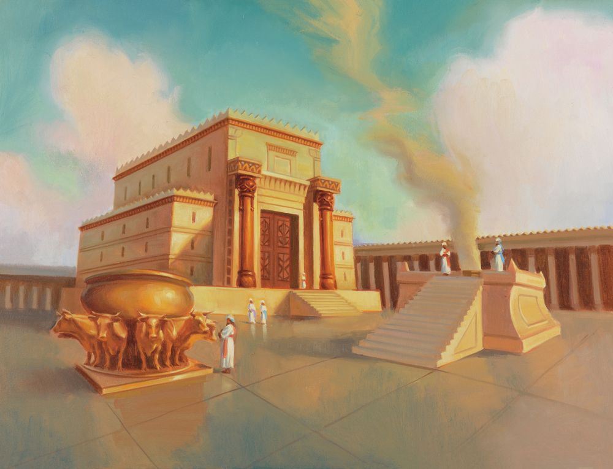
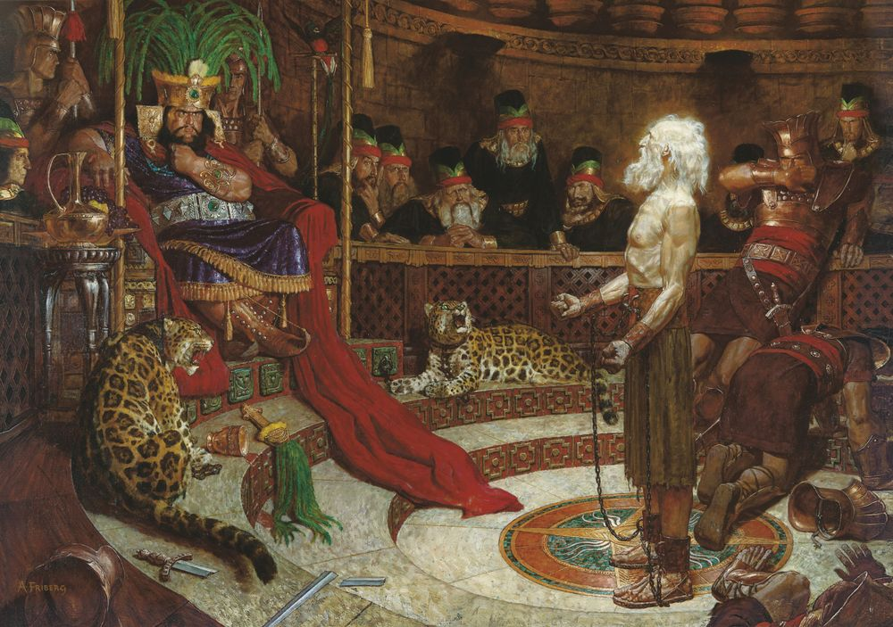
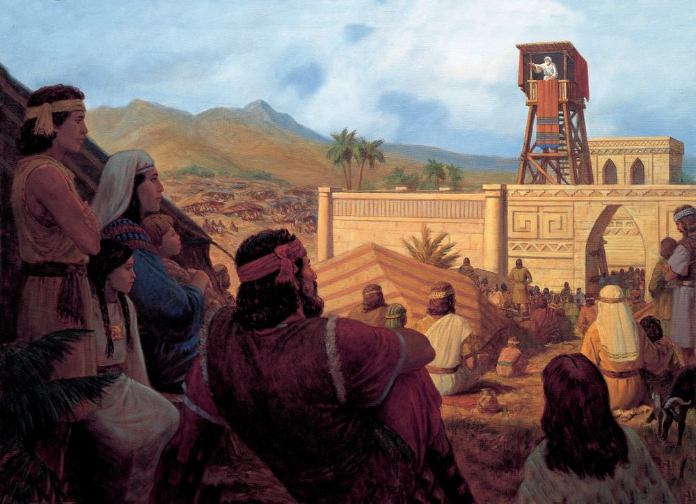

1 Kings 11:4 · "his heart was not perfect with the Lord his God."
2 Samuel 11–12; 1 Kings 3, 6–9, 11 · Come Follow Me, June 22–28Primary (9-year-olds), Elk Ridge 15th Ward~35 min
Objective. Help the kids know Saul, David, and Solomon, the first three kings of Israel: who they were, how they connect, and the hard, hopeful truth that all three were chosen and great, yet each let something into his heart that pulled him down. Land the big idea: guard your heart. God is the real King, a good leader serves (Book of Mormon kings), and there is one King who never fell, Jesus Christ.
↩ Where we are on the timeline
Two weeks ago we learned that the Lord looketh on the heart: He passed over tall, impressive Saul and chose young David. Today we follow those same kings forward and find out what happened to their hearts. This is the story of how Israel went from judges to kings, and why even great men need to watch their hearts.
ProphetSamuel
→
King 1Saul
→
King 2David
→
King 3Solomon
→
ForeverJesus
Israel's first three kings, then the King of Kings who never falls.
01
Meet the three kings
~6 min
Israel used to be led by prophets and judges. Then the people asked for a king "like all the nations." God gave them kings, three of them, one after another. Tap each card to flip it over and find out who he was and how they are connected.
1

Saul
The first king
tap to flip ↻
King Saul
Israel's very first king. He was tall, strong, and handsome, the kind of king the people wanted. He started out humble (he even hid when he was chosen!), but pride and disobedience grew in his heart. He is not David's dad. He was David's boss, and later, sadly, became jealous of David.
2
David
The second king
tap to flip ↻
King David
The shepherd boy God chose, "a man after God's own heart." He played the harp for King Saul, beat the giant Goliath, married Saul's daughter, and was best friends with Saul's son. So David and Saul became family by marriage. David became a great king, but later he made a very serious mistake.
3

Solomon
The third king
tap to flip ↻
King Solomon
David's son. When David died, Solomon became king. God made him the wisest man on earth, and he built a beautiful temple for the Lord. But little by little he let other things take God's place, and his heart turned away.
So how do they connect? Saul → David → Solomon. Saul was first. David married into Saul's family and became king next. And Solomon was David's own son. Three kings, like a relay race passing the crown.
02
The rise and the fall
~14 min
Here is the surprising part: all three started out great, and all three fell. For each king, tap "Watch his rise" to see how high he climbed, then tap "What happened?" to see what pulled him down. As we go, we will read a verse together and stop to think about a question.
👑 King Saul
Activity · stamp his story
Chosen by God… then he stopped obeying
👑
Chosen by God to be king
Humble at the start
Led Israel to victory
Disobeyed God's command
His rise: God chose Saul as the very first king of Israel. He was tall, strong, and so humble at the start that he hid instead of bragging. The Spirit of God came upon him, and he began really well.
His heart problem: pride and disobedience. God gave Saul clear instructions, but Saul got impatient and did things his own way. He thought a big offering would make up for not obeying. Then he grew so jealous of David that his jealousy turned into trying to hurt him again and again:
He threw a spear at David, twice, while David was playing the harp to help him feel better (1 Samuel 18:10–11; 19:9–10).
He sent David into dangerous battles, hoping the Philistines would kill him for him (1 Samuel 18:17, 25).
He told his own son Jonathan and his servants to kill David (1 Samuel 19:1).
He sent men to David's house to kill him; David's wife lowered him out a window to escape (1 Samuel 19:11–17).
He chased David through the wilderness with an army of 3,000 men. Yet David twice spared Saul's life, because Saul was still the Lord's anointed (1 Samuel 24; 26).
A great-looking king with a disobedient, jealous heart is not what God wanted.
"Behold, to obey is better than sacrifice, and to hearken than the fat of rams."
🔎 Focus question
God wanted Saul to obey, not just bring nice gifts. What is one thing Heavenly Father has asked you to do that you can obey this week, even when it feels hard?
👑 King David
David started even higher than Saul. God Himself called David "a man after his own heart."
"…the Lord hath sought him a man after his own heart…"
🔎 Focus question
God loved what was inside David's heart. What do you think God saw in David's heart that He loved so much?

Young David trusted God and beat the giant Goliath. Gospel Art · the Church
Activity · you decide
A great king… at a fork in the road
🐑 Shepherd boy🪨 Beat Goliath👑 Great king
One evening David saw something he knew he should not. What should he do?
That is exactly right. Turning away early is how you keep your heart safe. Sadly, the real David kept looking…
That is the road David took. He did not turn away, and one wrong choice grew into a terrible one…
His rise: a shepherd boy God Himself called "a man after his own heart." He trusted God to beat the giant Goliath, wrote beautiful songs to the Lord, and became Israel's greatest king, with a promise that the Savior would one day come through his family. Now you choose what comes next…
His heart problem: he did not guard his heart. One evening David stayed home when he should have been with his army. He saw a woman named Bathsheba, another man's wife, and instead of turning away, he kept wanting her. One wrong choice grew into a worse one, and then a terrible one, when he had her husband, Uriah, sent to die in battle. A small wrong choice that he did not stop grew into a huge one.
"…he saw a woman… and the woman was very beautiful to look upon."
🔎 Focus question
David saw something he should have looked away from, but he kept looking. When we see or want something we know is wrong, what could we do in that very moment to keep our heart safe?
God loved David too much to let him stay lost, so He sent the prophet Nathan to help David see what he had done.
God sent a friend, the prophet Nathan, to tell David a hard truth. Why is a friend who helps us see our mistakes actually a gift, even when it is uncomfortable?
David was truly sorry. He wrote songs (psalms) begging God for a clean heart again.
"Create in me a clean heart, O God; and renew a right spirit within me."
🔎 Focus question
After his big mistake, David begged God for a clean heart. When we make a wrong choice, how can our hearts be made clean again? (Hint: it is the same way, through Jesus Christ, for us today.)
A gentle, honest note for the class
David was truly sorry, and God forgave him. But some choices leave results we cannot completely undo. That is exactly why the very best plan is to keep our hearts clean and turn away early, before a small wrong choice grows.
👑 King Solomon
Solomon was David's son. When God offered to give him anything he wanted, Solomon did not ask for money or power. He asked for a wise, understanding heart.
"Give therefore thy servant an understanding heart… that I may discern between good and bad."
🔎 Focus question
Solomon could have asked God for anything, and he asked for a wise heart to tell good from bad. If God said you could ask Him for one thing, what good thing would you ask for?

God gave Solomon wisdom, and Solomon built a beautiful temple so people could be close to the Lord. Gospel Art · the Church
"I have hallowed this house, which thou hast built, to put my name there for ever…"
🔎 Focus question
Solomon built a holy temple so people could feel close to God. Why is it good to have a special, holy place like the temple today?
Activity · fill it, then watch it leak
The wisest man… let his heart drift away
💛
🗿 🗿 🗿
How full of God is his heart?
His rise: when God offered him anything, Solomon humbly asked for wisdom to lead well. God made him the wisest person on earth, gave him great riches too, and Solomon built a beautiful temple so the people could be close to the Lord.
His heart problem: he let other loves crowd out God. Solomon married many wives from lands that worshipped idols, and little by little they turned his heart to worship those false gods too. The wisest man in the world stopped putting God first, one small compromise at a time.
"…his wives turned away his heart after other gods: and his heart was not perfect with the Lord his God…"
🔎 Focus question
The wisest man let little things slowly turn his heart away from God. What small things can quietly crowd God out of our hearts if we are not careful?
03
The big lesson: guard your heart
~3 min
Three different kings. Three different falls. But look closely: it was never their strength, their looks, or their brains that decided things. It was what they let live in their hearts. The deepest lesson of all three is the same.
Your heart is the most important thing you rule over. Guard it.
"Keep thy heart with all diligence; for out of it are the issues of life."
🔎 Focus question
If your heart were a garden, what good things would you want growing in it? And what "weeds" might you need to pull out before they take over?
04
What's in YOUR heart?
~5 min
The kings faced grown-up choices, but we face kid-sized ones every day. Pick what you would do, then see which king learned that very lesson.
1. You are losing a game with friends. No one is watching the score.
Like King Saul: obeying the rules matters more than winning. "To obey is better than sacrifice." A clean win starts with a clean heart.
2. You see your brother's treat on the counter. He is not home, and you really want it.
Like King David: the safest moment to stop a wrong choice is right at the start, by turning away before wanting turns into doing.
3. Your friends want to leave out the new kid because it is easier. They are waiting for you.
Like King Solomon: do not let other people slowly turn your heart away from what is right. Keep God, and kindness, first.
05
What the Book of Mormon teaches about kings
~5 min
Many years later and far away, the Nephites in the Book of Mormon had kings too, and they learned the same lessons. Their stories help us understand what makes a leader good or bad.
A wise warning. King Mosiah had watched what one bad king can do, so he taught his people to be careful about putting all their trust in any one ruler.
"…because all men are not just it is not expedient that ye should have a king… For behold, how much iniquity doth one wicked king cause to be committed…"
🔎 Focus question
King Mosiah saw that one bad king can hurt a whole people, just like Saul, David, and Solomon showed. Why is it safer to follow God's rules than to trust any one person to always be good?
A king who fell, just like Solomon. King Noah was a wicked Nephite king. Listen for what his life sounds like.

The prophet Abinadi warns the wicked King Noah, who would not listen. Gospel Art · the Church
"For behold, he did not keep the commandments of God, but he did walk after the desires of his own heart. And he had many wives…"
🔎 Focus question
Riches, many wives, fancy buildings… which Old Testament king does King Noah remind you of? What did all those things do to Noah's heart?
A king who did not fall. Now meet a different kind of king. King Benjamin did not boss his people or take their money. He worked with his own hands and served them.

King Benjamin served his people and pointed them to Jesus Christ. Gospel Art · the Church
"…when ye are in the service of your fellow beings ye are only in the service of your God."
🔎 Focus question
King Benjamin was a king who served instead of being served. Who is the greatest example of a King who serves everyone? And who is one person you could quietly serve this week?
The Book of Mormon is full of both kinds of king. Read each clue, then tap your guess: was he a good king or a wicked king?
King Benjamin Mosiah 2
Worked with his own hands so he would not be a burden, served his people, and taught them about Jesus Christ.
Good king. He served instead of being served, a king after Heavenly Father's own heart.
King Mosiah Mosiah 29
Instead of keeping all the power for himself, he let the people choose righteous judges, because he knew one bad king can hurt everyone.
Good king. He was humble enough to share power and protect his people from a future wicked king.
King Lamoni Alma 18–19
A Lamanite king who listened to the missionary Ammon, believed in God, and let the Lord change his heart.
Good king. He started out not knowing God, but he humbled himself and his whole heart changed.
King Noah Mosiah 11
Was lazy and proud, taxed his people to pay for fancy things, had many wives, and put the prophet Abinadi to death.
Wicked king. Riches and pride turned his heart, a lot like King Solomon.
Amalickiah Alma 46–47
Told lies and even murdered people to make himself king, then started wars to take more power.
Wicked king. He wanted power so badly that he was willing to hurt anyone to get it.
King Riplakish Ether 10
Made his people pay heavy taxes, had many wives, and built fancy buildings and a fancy throne just for himself.
Wicked king. Another king (like Solomon and Noah) whose heart fell when he loved riches more than God.
The pattern to notice
Good kings (Benjamin, Mosiah, Lamoni) served others and kept God first. Wicked kings (Noah, Amalickiah, Riplakish) loved power, riches, or themselves, the very same things that pulled Saul, David, and Solomon down.
06
The King who never fell
~3 min
Saul, David, and Solomon all wore crowns, and all three fell. King Benjamin spent his whole speech pointing to the one King whose heart was always perfect, and who never falls: Jesus Christ, the King of Kings.
Jesus Christ, the King who never falls, and who helps us get clean hearts again.
"…there shall be no other name given nor any other way nor means whereby salvation can come unto the children of men, only in and through the name of Christ…"
🔎 Focus question
Saul, David, and Solomon all fell, but Jesus never did. How can the one King who never falls help us when we fall and need a clean heart again?
07
Watch: a king who served (King Benjamin)
~3 min
A short animated story of King Benjamin, the king who served his people and pointed them to Jesus Christ, the opposite of a king who falls.
Challenge for the week: each day, do one thing to guard your heart. Obey something hard (like Saul should have), turn away early from something wrong (like David), keep God first when others pull you another way (like Solomon), and serve someone quietly (like King Benjamin).
Remember: being strong, smart, or important does not keep us safe. A heart that stays close to God does.
Brief testimony: even great people can fall, and that is why we need Jesus Christ, the King who never falls, who can make every heart clean again. Close with prayer.